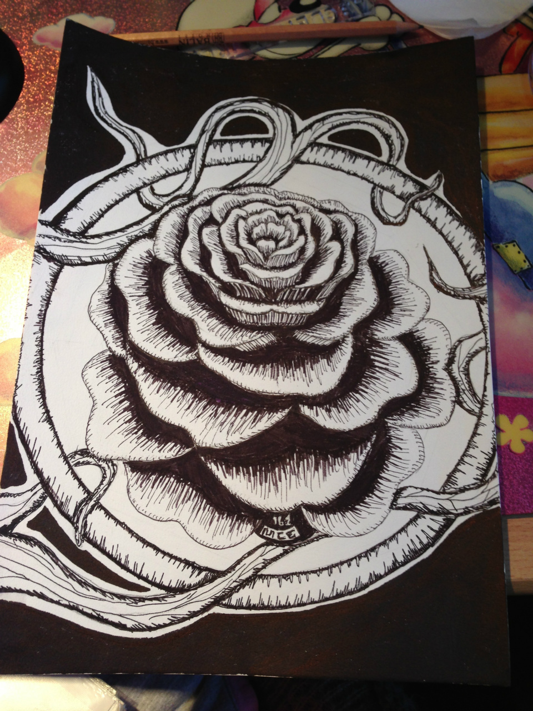
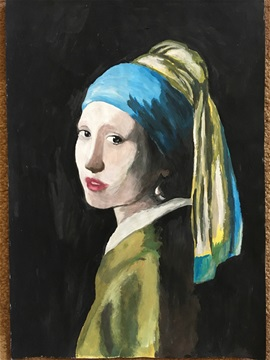
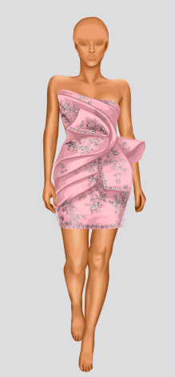
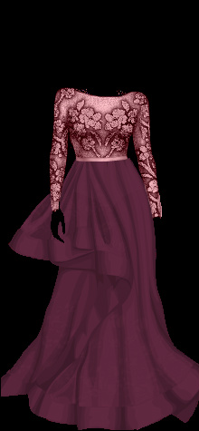
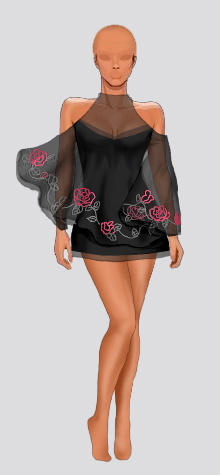
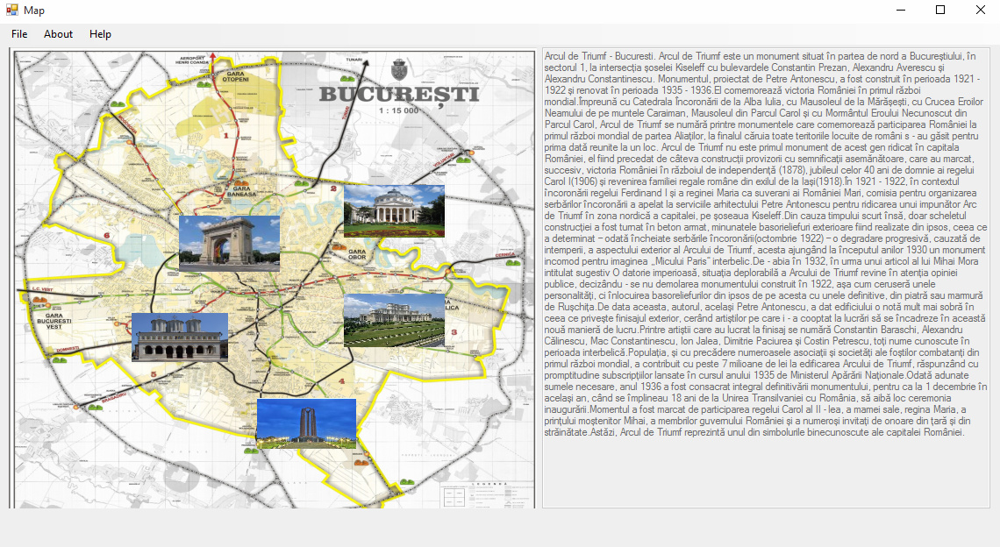
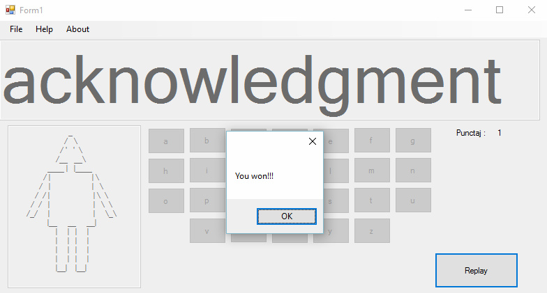
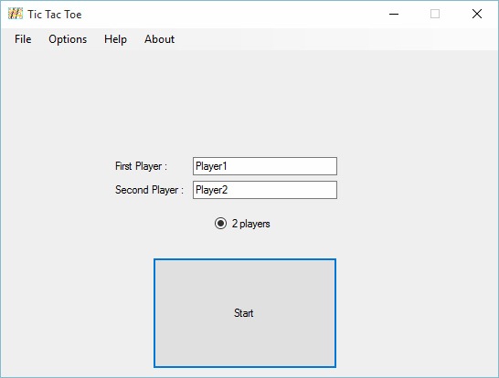
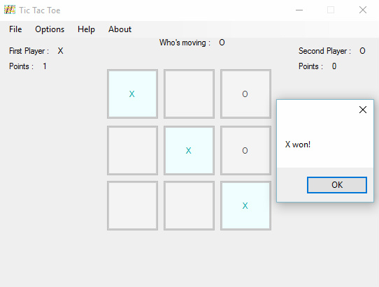
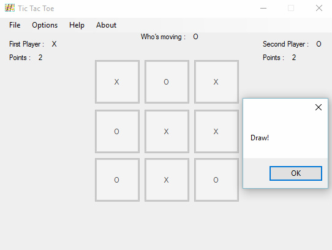

PORTFOLIO
I believe my passion for web design & development can be divided into three main stages.
FIRST STAGE
This phase represents the period when I just discovered what the internet has to offer and used it only for inspiration. As I mentioned, I have always enjoyed drawing, sketching, sometimes painting, beacause it has been a dream of mine from long ago to excel in the creative domain. Here are some of my designs along the years, inspired by some pictures or just recreated from my imagination: from drawing in my free time to drawing in the breaks between classes, from simple sketches to complex paintings.
 SECOND STAGE
The following period represents the time when I slowly started to transfer my designing to the digital world. I was keen on graphic design, watching tutorials online in order to improve my skills and was excited about what the next day will bring to the multimedia environment. What I enjoyed most was to create clothes that looked realistic, with lots of highlights and shadows using Photoshop.
  THIRD STAGE
This phase represents the time when I started high school. Till then, I thought designing meant art, but I found out that this term has many meanings.
One of the meanings was programming. My high school schedule includes seven hours/week of Computer Science in which I learned to program in C++, C#, HTML, create databases in Oracle.
We learned a variety of algorithms in C++ from which we were evaluated, but my favourite projects were in C# in which we had to recreate the Hangman, Tic Tac Toe and make an interactive map of a country or city.
Interactive Map
The program opens the map of Bucharest, the capital of Romania. You can see some other small images which represents turistic sights situated in Bucharest. When you click on one of them, automatically a text box appears with information about that turistic sight. Hangman
The program choses automatically a word from a list of ten words which you have to guess. You have 7 lives, when you click on a letter which is not a part of the word you lose a life. So, there are two options: you do not guess the word and it's game over or you guess the word and win. Every time you win, your score which is initially null adds up by one.
Tic Tac Toe
This game is played between two people and in the beginning you can write both of your names. The concept behind it is quite simple: you declare a variable and when it is even it means that the X player has to make a move, and when it is odd the O player has to make his move. The player who succeeds in placing three of their marks in a horizontal, vertical, or diagonal row wins the game. If not, it is a draw. The winner's increases by one.   The third stage continues in University where I have been polishing my programming skills in C, C++ ( OOP ), C#, SQL, and learning new languages such as Java and PLSQL. One project I had to make in C++ in order to ilustrate the OOP priciples was an application for budget management where expenditures are recorded by categories (food, utilities, etc.). You can add new expenses for each day, you can modify the expenses already entered or delete the existing ones. The application keeps the history of the input data using text or binary files. Multiple criteria (total spend for a given date, grouped by category or individually, monthly, annual total, average amount of purchases for a certain category, etc.) are available to the user.